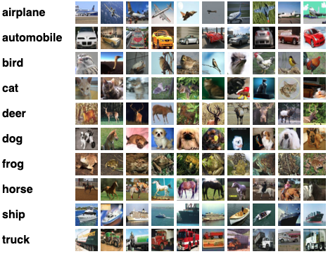

The path to convergence on a loss landscape.
This project is the final project for the Scientific Visualization class in fall 2022. The project was open ended, with the only requirements that you work with a partner and implement a scientific visualization paper using OpenGL. The paper Chase Ison and I chose is titled "Visualizing the Loss Landscape of Neural Nets" by Hao Li et al. and implemented two different techniques to visualize the loss landscapes of neural nets.
I recommend that you read our final report linked here for more details, as this post will just be a quick overview of the project and some our results.
We chose to visualize two convolutional neural networks: ResNet-50 and VGG, each trained to classify images of the CIFAR-10 dataset. For each model, we generated two different loss landscapes from the two techniques Hao Li et al. described: random direction iteration and principle component analysis (PCA).

CIFAR-10 dataset examples.
Our process for generating the visualization went as follows:

Loss landscapes of the ResNet-50 model from PCA dimensionality reduction, with the gradient decent path.
TODO: talk about exactly what the results mean!!!

The 3D loss landscape with critical points labelled for the ResNet-50 model using random direction iteration for dimensionality reduction.
This was a fun project that pushed me to understand dimensionality reduction and what we can learn from loss landscapes. The project stressed a lot of different skills- being able to write PyTorch code, being able to write dimensionality reduction code, training the models on a high performance cluster, formatting the data, and visualizing it with custom OpenGL code. I'm thankful to have had Chase as my project partner for knocking this project out within a week!
You can find the entire codebase as well as our final report in our github repo linked here.